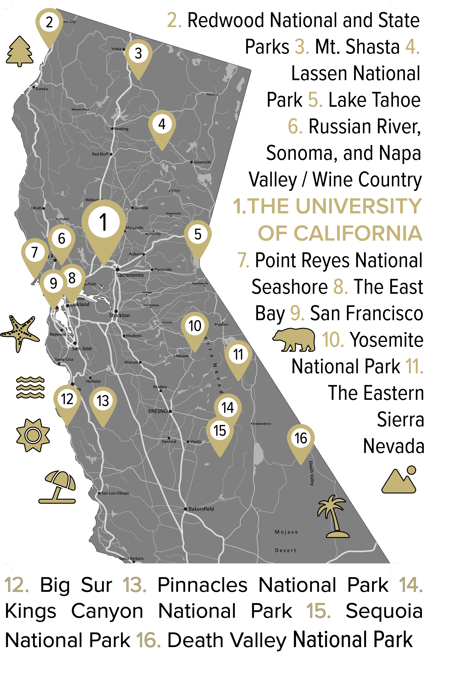

ABOUT
What do observational seismologists do?
We use subtle (or not so subtle) vibrations of the Earth's surface to understand tectonic, volcanic, and surface processes. Our work encompasses data collection, analysis, interpretation and developing simplified numerical models to understand Earth's complex physical systems. While our main goal is to advance geophysical knowledge, basic science research enhances our ability to predict, prepare for, and respond to geohazards.
Earthquake seismology
Earthquake seismology involves measuring and analyzing the vibrations caused by slip along tectonic faults and other seismic sources to understand the origin, magnitude, and effects of earthquakes.
Data collection
Seismic data collection involves using seismometers, which detect vibrations of the ground surface caused by natural or anthropogenic sources. We deploy seismometers seasonally to study geophysical processes such as earthquakes, volcanoes, and debris flows.
Volcano seismology
Volcano seismology is the study of seismic activity generated by volcanic processes, including magma movement, gas release, and rock fracturing within a volcano. It helps monitor volcanic activity, forecast eruptions, and understand the internal structure and dynamics of volcanic systems.
Data analysis
Seismic data analysis involves processing and interpreting recorded ground motion to extract information about the Earth. Techniques like waveform analysis, spectral decomposition, filtering, and event location help identify earthquake characteristics and understand geophysical phenomena.
Environmental Seismology
Environmental seismology is the study of seismic signals generated by natural events such as landslides, glaciers, and rivers. We have particular interest in debris flows on Cascades volcanoes and are trying to develop ways to determine relvant properties of flows such as their size and speed from their seismic manifestation.
Mechanistic models
Earthquake cycle models describe the recurring processes of stress accumulation and release along faults, including interseismic, coseismic, and postseismic phases. These models help predict fault behavior over time and provide insights into seismic hazard by simulating the mechanics of fault slip and stress transfer.
Slow Slip
Slow slip events are episodes of gradual, largely aseismic fault movement that occur over days to months. SSEs play a crucial role in understanding fault mechanics and their potential relationship to larger fast earthquakes.
Coffee
We drink coffee. Sometimes we drink a lot of coffee.
OUR WORK
Publications
After our research on a particular topic is complete, we submit our findings for publication in academic journals. The work undergoes peer review where other scientists ensure its accuracy and originality. After revisions, the papers are published and can be accessed by scientists globally who may have interest in our work. The peer-review and publication process increases the collective knowledge of the scientific community, promotes collaboration, and informs future research directions.
Perfection has always eluded me, and I've never missed it.

WHAT'S NEXT?
Graduate school at UC Davis
If you're trying to decide which graduate school you'd like to attend, here are some reasons why you should choose the University of California, Davis.
Observational Seismology at Davis
If you're interested in attending graduate school in observational seismology at UCD ....
Geophysics at Davis
Additionally, our department hosts one of the largest geophysics programs in the country....
Earth and Planetary Science at Davis
The UCD Department of Earth Sciences is among the top geoscience programs in the world. Our faculty members are nationally and internationally recognized leaders in their fields. We're a big department, but we're not too big. You'll still have regular meetings with your advisor(s), have the chance to interact with all faculty members, and there's a healthy graduate community to support you in your research endeavors. Recent graduates go on to permanent positions at government agencies such as the USGS or national labs, faculty positions, and the private sector.
Davis
Davis, home to the University of California, is an idyllic town located about 15 miles west of Sacramento. Known for its extensive bike paths, Davis is one of the most bicycle-friendly cities in the U.S. and offers a unique blend of academic excellence and quality of life.
Northern California
California is wild, beautiful, and unspoiled. An hour drive west of Eugene is the breathtaking Oregon coast where you can fish, surf, and eat local all in a day trip. You'll likely have whatever beach you choose to visit to yourself. An hour to the east are the Oregon Cascades. Both downhill and cross country skiing are slightly over an hour away. Two hours north, you'll find Portland, OR. A beer and hipster mecca, you'll need to make a pilgrimage north at some point, if not for Portland itself, to ski above the clouds at Mt. Hood or tour the spectacular waterfalls of the Columbia River Gorge. Two plus hours south is Crater Lake National Park.